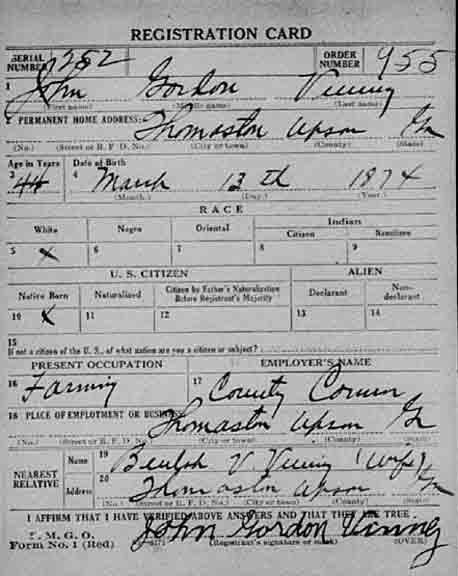
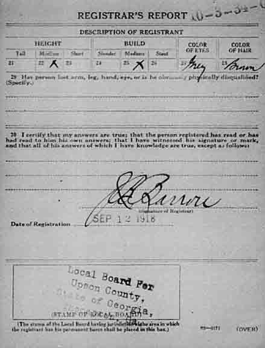
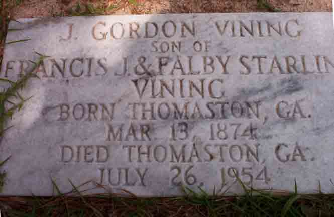
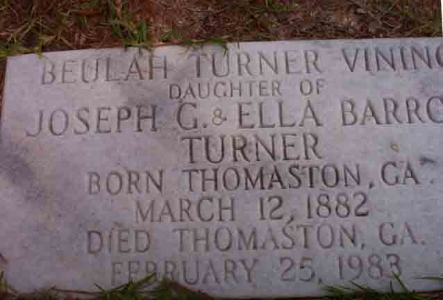

Military Data
World War I draft registration card for John Gordon Vining:

Death Data
Gravestones for John Gordon Vining and Beulah (Turner) Vining, in Southview Cemetery, Thomaston, Upson County, Georgia (from Find A Grave):
